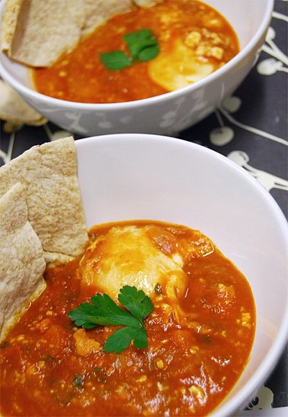

Shakshuka

Description:
A traditional Middle-Eastern dish.
Ingredients
- Eggs
- Olive Oil
- Salt
- Pepper
- Garlic
- Onions
- Bell Pepper
- Paprika
- Basil Leaves
- Thyme
- Cumin
- Garlic Powder
- Tomatoes
- Tomato Paste
- Water
- Sugar
- Cube tomatoes, onions, and bell peppers.
- Dice garlic.
- Pour 1 tsp of oil into large bowl and place contents above in bowl.
- Mix with seasoning excluding sugar.
- Heat pan with oil.
- Pour contents of bowl in pan.
- Once pan contents are boiling, pour 1 tsp of sugar in contents.
- Using a spoon, create "dunes" in pan of contents and break eggs into said open pockets of space.
- Leave cooking for 20 minutes.
- Enjoy life.